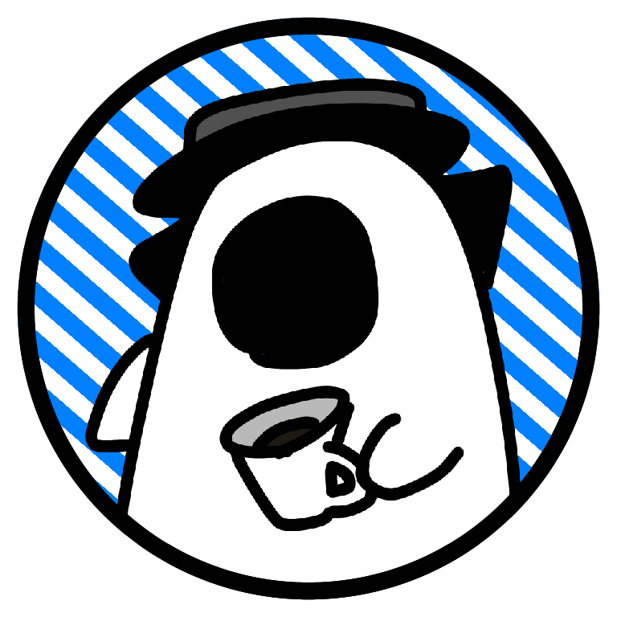
Profile
梅沢 保志 Umezawa Hoshi
大阪府立港南造形高等学校
1. programming
プログラミング作品
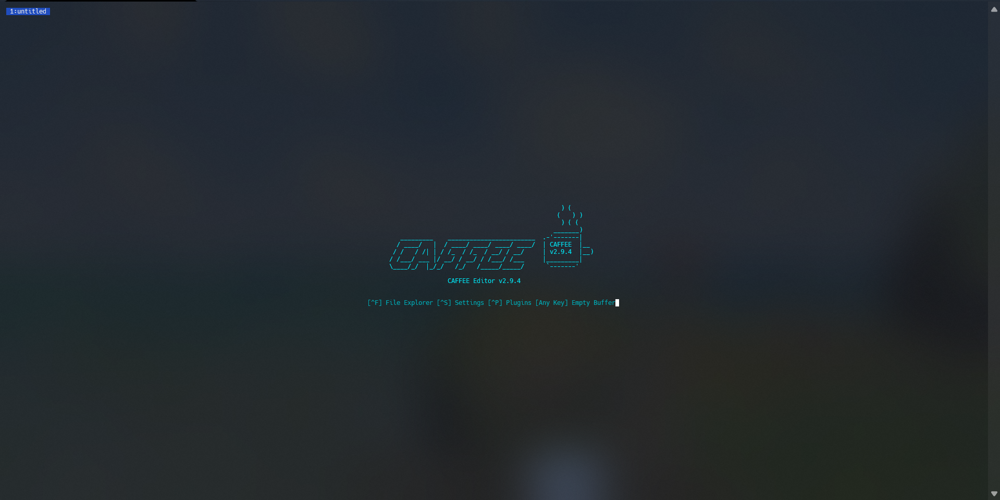
Python3 / pypiCAFFEE Editor
2025.11.19Command Line Text Editor
自分が使いたいターミナルのコードエディタがなかったので自分向けに作りました。pypiで実際にリリースし、約二万ダウンロードを記録している自信作です。
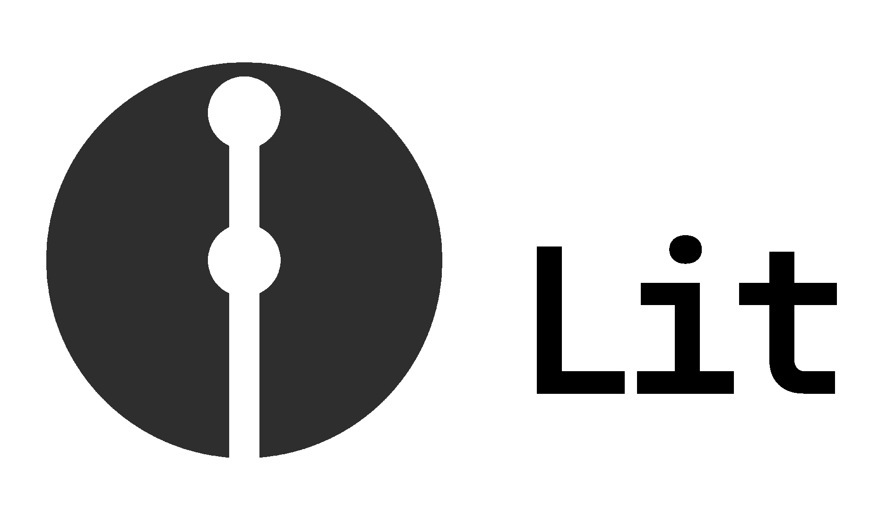
GolangLit
2026.05.06Local Version Control Tool
Gitという有名なバージョン管理ツールがあるのですが、複数人での共有を前提としており、一人の作業では余計な部分が多すぎると感じ、ローカル版のGitを作れないか、という試みで作ったツールです。
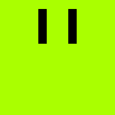
HTML / JS / CSSINFINITY PIXEL STORM : MM
2025.12.21Dot Art Shooting Game
ドット絵調のシューティングゲームです。僕の詰め込みたいゲーム性やエフェクトを入れれた、自分のしたかったゲームをそのまま形にしたものです！
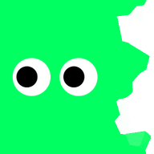
HTML / JS / CSSCAFEZARIO
2025Human vs Slime Game
IPS: MMと一部のストーリーを共有している人間vsスライムで戦うゲームです。物語の繋がっている系のゲームを作ってみたくて作りました。
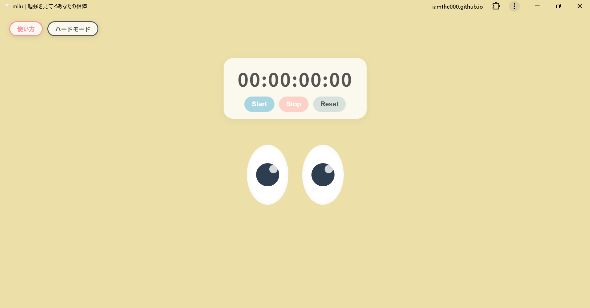
HTML / JS / CSSMILU (ミル)
2025Concentration Timer Application
目によるプレッシャーを利用して勉強中の集中を促せるのではないかと思い作ったサービスです。実際友人にも使ってもらったり、自身もこれを使って平均点を上げたり、自分の作るもので人が動いたり変わる喜びを教えてくれたサービスです。初めて本格的にUIやポップアップに本格的にこだわったサービスです。
2. design / graphic
グラフィックデザイン作品

エコの裏側（電力はどこから？）
2025アクリル絵の具 / B1サイズ
自分の作品で人に訴えかけたり、行動をさせたりするのが好きなので、それがやりたくて初めてデザインとして作った作品です。ほかのデザイン部員にくらべて経験も技術も足りなく、焦っていたのが印象に残っています。自分の趣味であるプログラミングとそれに関連させたテーマは初めてのデザインをすごく楽しんで制作する理由をくれました。

セルジュ・ポリアコフ 新作展 ポスターチラシ
2025 / アクリル絵の具 (22.8×10.1cm)
授業内で有名作家の新作が見つかった際の新作展のポスターチラシを制作。タイトルや作品をどこに置くかまでがデザインなのだと感じ、苦手なレタリングを練習し始めるきっかけになった作品です。

Tropicanaパッケージ
2025 / アクリル絵の具 (22.8×10.1cm)
ロゴとポスター中心の制作からパッケージデザインという、日常に溶け込んでいるデザインという新しい視点を与えてくれた授業の制作物です。
VScode ロゴデザイン
2025 / アクリル絵の具 (22.8×10.1cm)
デザインの授業ではいろいろなことを学びましたが、デザインの楽しさそのものや、必要なことを最低限知ったのはこの授業でした。
3. western painting
洋画・油絵作品

静物画その1
2025 / 油絵具 (22.8×10.1cm)
洋画の授業で最初に描いた作品。キャンバスに色を乗せるだけで精一杯で、置いているものの影を表現できず悔しかった記憶が残る作品です。

雪山を超えると...
2025 / 油絵具 (22.8×10.1cm)
シュールレアリスムの授業で描いたもの。好きなものや日常で見るものを絵の中で再現したく、休み時間も制作に充てました。作品に愛を持って制作することを学びました。
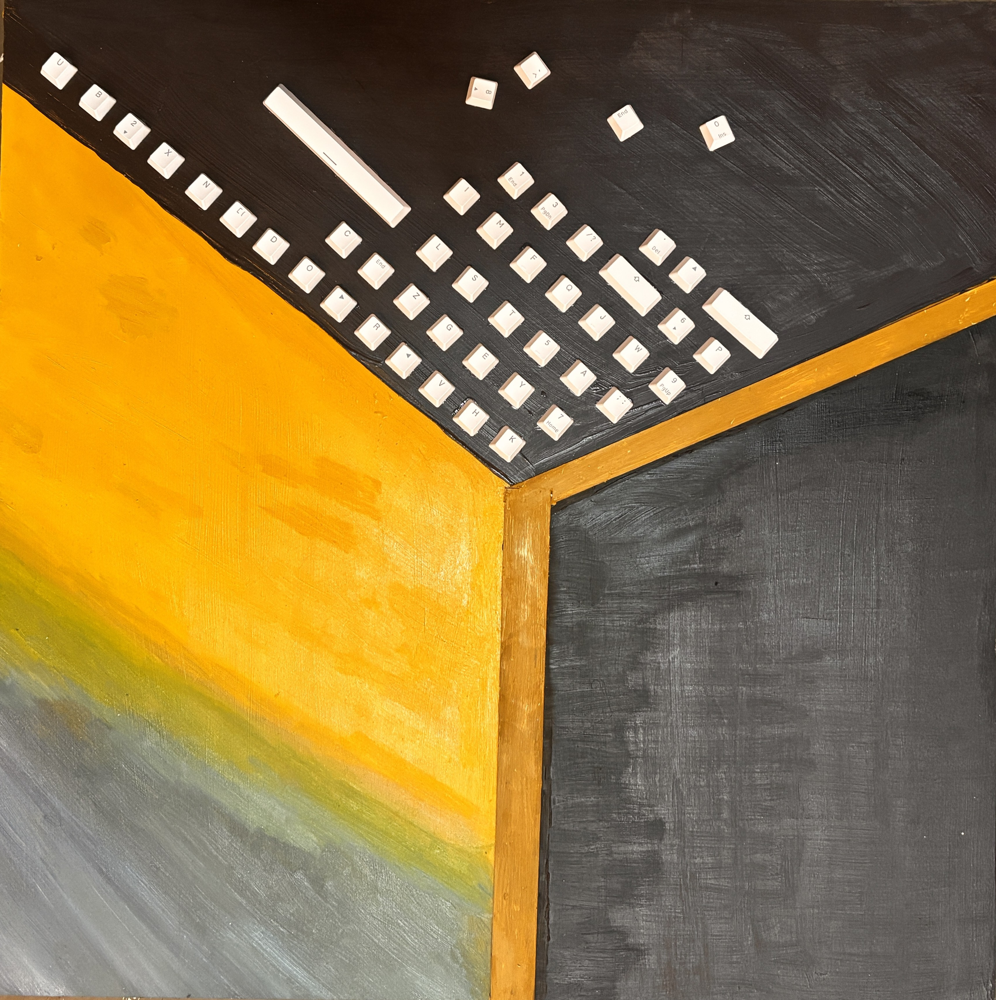
Life
詳細あり2026 / 油絵具, 厚紙, キーキャップ
二年生の最後の授業で、日常生活をテーマに描いた抽象画。趣味・学校・内面の領域を表現し、厚紙を用いた切断や立体物を融合させました。
4. drawing
デッサン

三年生 デッサン
2026 / 鉛筆, 練り消し
380×540mm

二年生 デッサン
2025 / 鉛筆, 練り消し
380×540mm

二年生 デッサン
2025 / 鉛筆, 練り消し, 水彩
380×540mm

一年生 デッサン
2024 / 鉛筆, 練り消し
380×540mm
5. pottery
陶芸作品
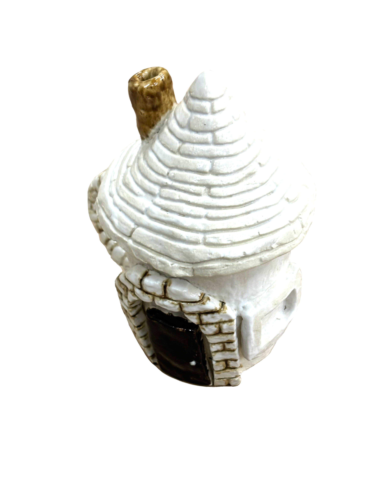
カップハウス
2025 / 白鳳, 黒天目
大阪府高等学校芸術文化祭 出品
高校展の反省を生かし、事前に細かく形を決め、複数の釉薬を初めて使用した作品です。蓋つきの作品を作るという挑戦をした作品でもあります。
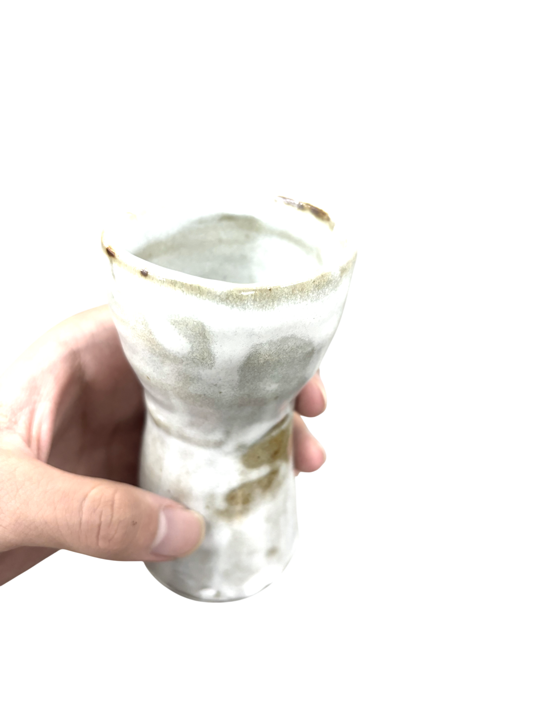
箸立て
2025 / 白鳳
大阪府高等学校美術・工芸展 出品
陶芸部が未発達な中、実用的なものを作りたいと考えた成果物。放課後に誰よりも失敗して作品を潰した末に生まれた、未熟ながらに最も思い入れのある作品です。
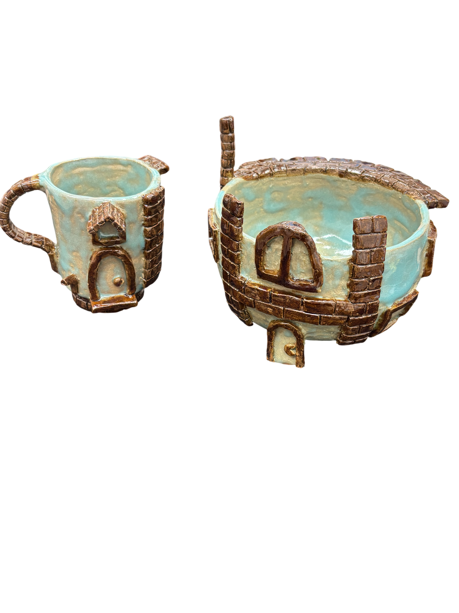
小人の家には
詳細あり2025 / 白鳳, 黒天目
大阪府高等学校美術・工芸展 出品
1年生の時のカップハウスのリベンジとして制作。何度もレンガの表現や釉薬の違いを調べ、陶芸部としての最後の作品として非常に満足のいく十分な制作ができました。
6. CG
computer graphics (Blender)
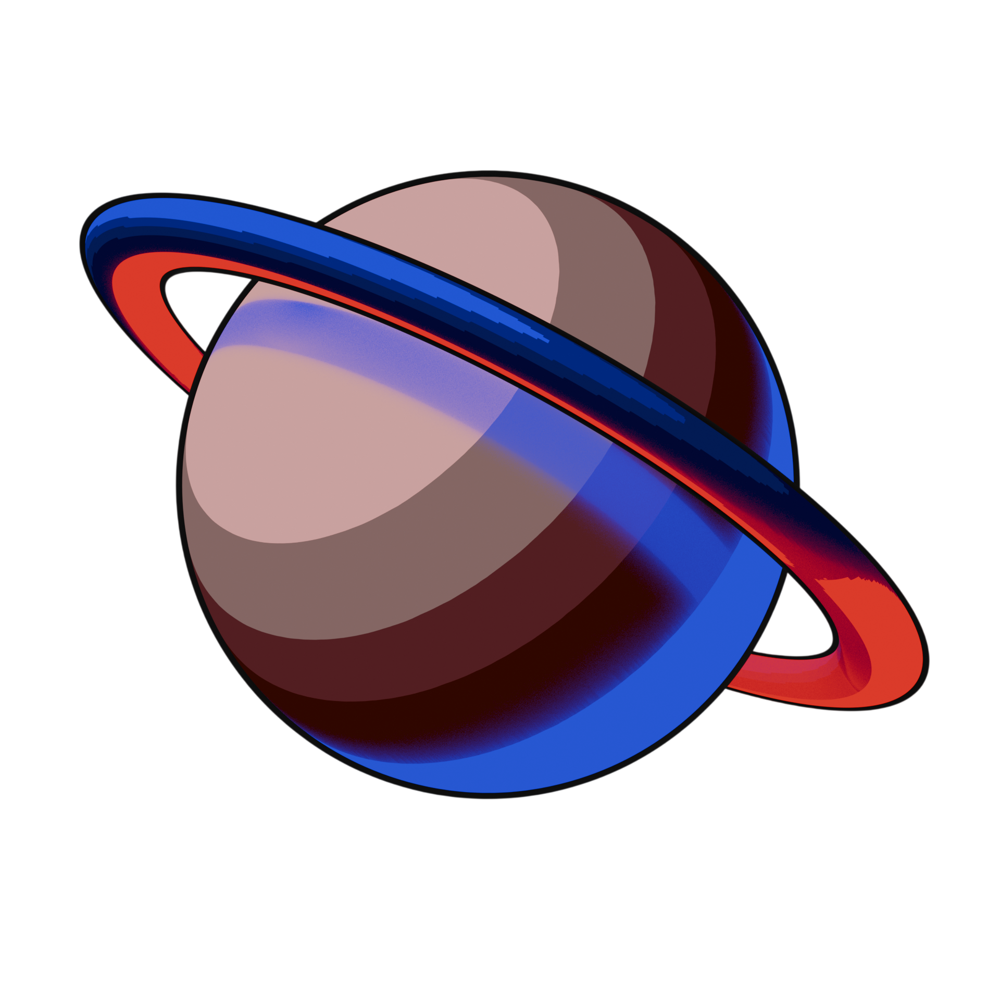
HOSHI
2026
CGソフトのBlenderで2D的な表現ができないかと考え作ったものです。
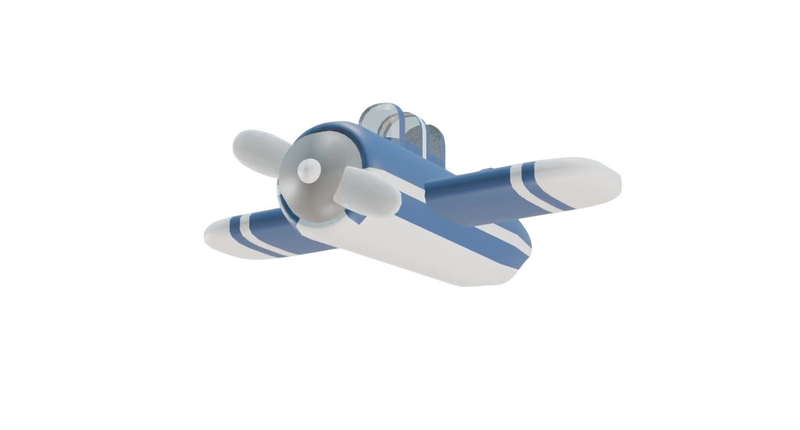
ヒコーキ
2026
せっかくなら映像もCGで作ってみようと思って作りました。
7. 学校外で描いた絵
個人の制作・絵画

狐
2024.06.15 / ACRYLIC F0
筆の流れで毛並みの動きや、命としての儚さ、感覚的な時間の流れを表現できるのではないかと個人的に考えて試みた作品です。自分の中では成功したと考えており、すごく気に入っています。

海岸と空
2024.08.21 / ACRYLIC 10cm×7.5cm
狐と猫の絵で試した表現を波でやってみようという絵です。ここから「存在しない空と地と海の風景の記憶」という形式に魅力を感じるようになり、その後の描きたい絵の構成が大きく定まりました。

橋の先には
ACRYLIC
ポートフォリオ全体のビジュアルを象徴する、奥へと広がるダイナミックな世界観を描いた作品です。